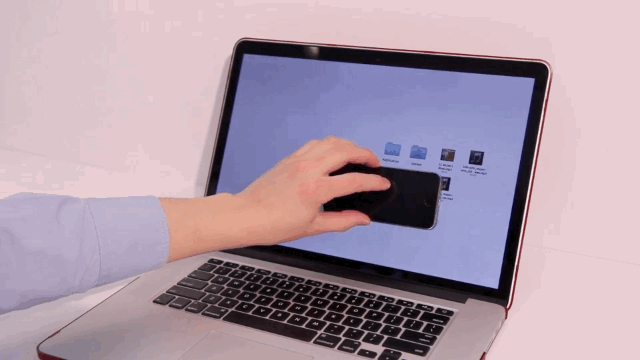
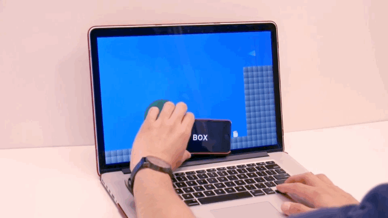

PHYSCI.70 Introduction to [Digital Fabrication]
JOSEPH WU
josephwu @ gsd . harvard . edu
back
[ Final Project Proposal ]
What will the future wrist wearables (smartwatches) be like in the upcoming extended reality? An average American had access to more than ten connected devices in their household in 2020. Smartwatches, is an electronic product, which can be embedded into human life in the form of wearables. It can act as a physical object, an interface, or even a space coordination system. Can wearable watches play a vital role in connecting these electronic products?


THAW [ 2014 ] Philipp Schoessler